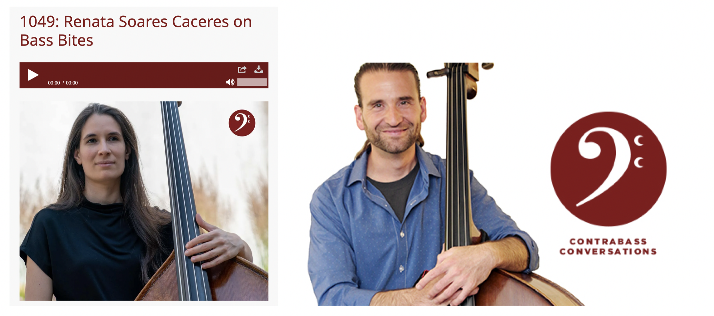
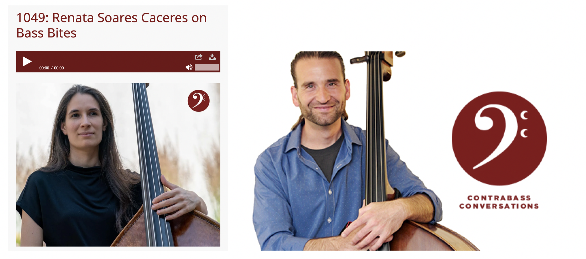

Interview
I was interviewed by Jason Heath for the Contrabass Conversations podcast. Check it out!

I was interviewed by Jason Heath for the Contrabass Conversations podcast. Check it out!

Bass Bites is a series of “bite-size” videos covering all fundamental aspects of double bass technique. Short, straight to the point, and easy to understand, this video series is organized sequentially but can be watched individually or in any given order, depending on your preference and needs. For both students and instructors, Bass Bites will provide all you need to know to cultivate the correct technique from the start.
By request of the Paul Rolland String Pedagogy Society, Michael Fanelli and I are currently working on a companion book for Paul Rolland's The Teaching of Action in String Playing as applied to the double bass.
| ASTA National Conference | Presenter: ISB Panel: Double Bass Pedagogy in the Orchestra Clall |
Atlanta, GA | March 21, 2025 |
|---|---|---|---|
| International Society of Bassists Convention | Young Players Competition Committee | Tallahassee, FL | June 2-7, 2025 |
| Paul Rolland String Pedagogy Workshop | Presenter | Chmapign-Urbana, IL | June 22-28, 2025, 2025 |
| Illinois Chamber Music Festival | Faculty | Illinois Wesleyan University | July 13 - August 1, 2025 |
Originally from Brazil, Dr. Renata Soares Cáceres has worked, performed, and studied in the US since 2013. Having started as an electric bassist at the age of 11, Renata is familiar with many different settings of music ensembles, in both classical and popular styles. She holds a Master’s degree from the University of Southern Mississippi, where she studied double bass with the virtuoso double bassist Marcos Machado and jazz with Larry Panella; an Artist Diploma Certificate from Texas Christian University, with Yuan Xiong Lu; and a DMA degree from the University of Illinois Urbana-Champaign, where she studied with Michael Cameron. With extensive experience in teaching double bass for all ages in the American school system, Renata has developed a passion for teaching. She has worked at the El Sistema USA program B Sharp Youth Music, in Fort Worth, TX, and at the Illinois String Academy at UIUC, in Illinois. She is regularly involved with festivals in the United States, like Illinois Chamber Music Festival, International Society of Bassists’ Young Bassists Program, and the Chicago Bass Festival, and teaches masterclasses in Brazil periodically. She has participated as a clinician at the ASTA National Conference (2021, 2022, 2023, 2024), the Illinois Music Educators Conference (2021, 2022), the International Society of Bassists’ Convention (2021, 2023), the Chicago Bass Festival (2022, 2024), and the Paul Rolland Pedagogy Workshop (2022, 2023), among others. Renata is fully certified in Paul Rolland’s String Pedagogy, and currently works alongside the Paul Rolland Society developing further materials for double bass teaching based on Paul Rolland’s pedagogy. Renata joined the International Society of Bassists' Education Team in 2023. She is the adjunct professor of double bass at Illinois Wesleyan University and has a private studio in Urbana-Champaign.
Renata is the creator and developer of Bass Bites.
rsoaresc@iwu.edu | renacaceres@gmail.com